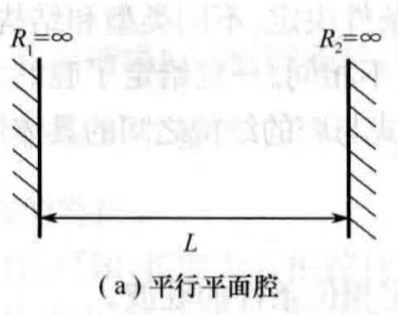
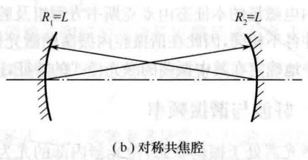
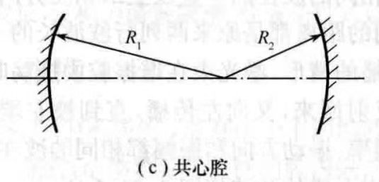
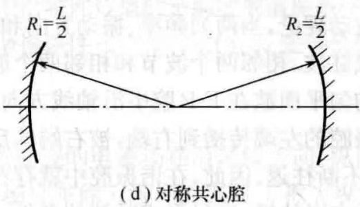
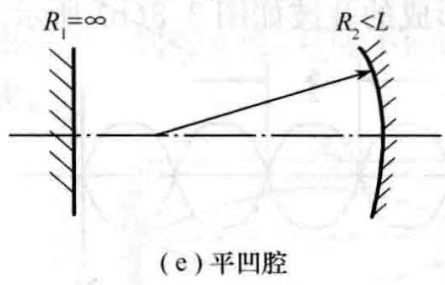
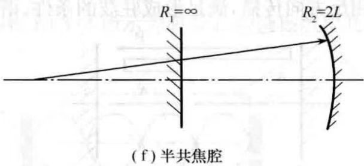
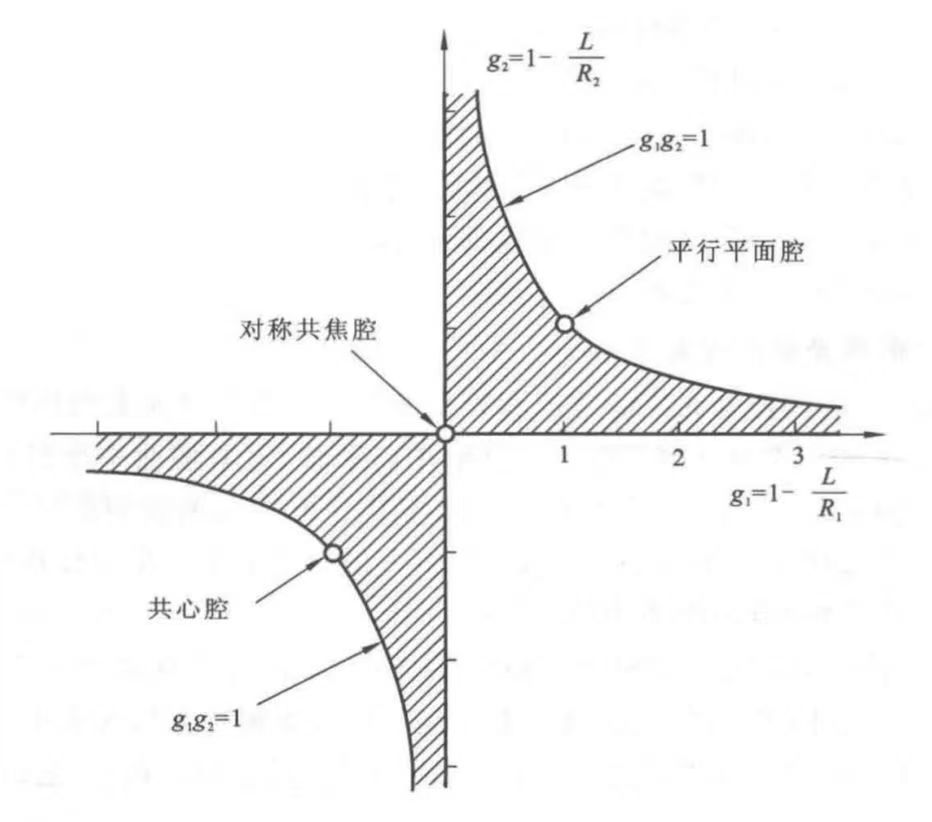

光学谐振腔是激光器的核心部分之一，具有正反馈、谐振、容纳工作物质与输出激光的作用.
本章主要讨论的问题有：
光学谐振腔理论研究的基本问题是光频电磁场在腔内的传输规律，从数学上讲，是求解电磁场方程的本征函数与本征值.
由于开放式光腔侧面不具有确定的边界，一般情况下不能在给定边界条件下对经典电磁场理论中的波动方程严格求解.
因此，常采用一些近似方法来处理开放式光腔的问题：
在几何光学近似下，光的波动性不起主要作用，可将光看作光线用几何光学方法处理.
对于光学谐振腔来说，当腔的Fresnel数远大于1时，光在其中往返传播时横向逸出腔外的几何损耗远大于由于腔镜的有限尺寸引起的衍射损耗，此时可以用几何光学的方法来处理腔的模式问题.
腔的Fresnel数：衡量光波在谐振腔内传播时，衍射效应严重程度的无量纲参数，常用N表示；N越大衍射越弱.
简便、直观
缺点不能得到腔的衍射损耗和对腔模式特性进入深入分析.
矩阵光学使用矩阵代数的方法研究光学问题，将几何光线与激光束在光腔内的往返传播行为用一个变换矩阵来描述，从而推导出谐振腔的稳定性条件.
此外，利用高斯光束的ABCD定律与模的自再现条件，能够推导出用矩阵元形式表示的光腔本征方程的模参数公式，便于光腔的设计与计算.
优点处理问题简明、规范，便于计算机求解.
从波动光学的菲涅尔-基尔霍夫衍射积分理论出发，可以建立一个描述光学谐振腔模式特性的本征积分方程.
本方法的严谨性讨论利用该方程原则上可以求得任意光腔的模式，从而得到场的振幅、相位分布、谐振频率，以及衍射损耗等腔模式特性.
虽然数学上已严格证明了本征方程解的存在性，但仅在腔镜几何尺寸趋于无穷大的情况下，该积分方程的解析求解才是有可能的.
对于腔镜几何尺寸有限的情况，迄今只对对称共焦腔求出了解析解.
多数情况下，需要使用近似方法求数值解.
虽然衍射积分方程理论使用了标量场近似，也不涉及电磁波的偏振特性，但与其他理论相比，仍可认为是一种比较普遍和严格的理论.
控制腔内光束的纵向分布特性，使大量光子集结在谐振腔所限制的少数几个模式中，从而提高光子的简并度，获得单色性好，方向性腔的相干光。
控制激光束的横向分布特性，影响光束的光斑尺寸，横模及光束的发散角等。
改变腔内光束的损耗（不同的腔镜几何结构还能改变腔内的几何偏折损耗），在增益一定的情况下通过改变输出耦合率来实现对激光器的控制。
根据结构、性能与机理等方面的不同，谐振腔有不同的分类方式.
| 光学谐振腔的分类 | |||
| 按能否忽略侧面边界分 | 开腔 | 根据几何偏折损耗的高低分 （根据腔内近轴光线几何逸出损耗的高低） |
稳定腔 |
| 非稳腔 | |||
| 临界腔 | |||
| 根据结构分 | 共轴腔 | ||
| 非共轴腔 | |||
| 闭腔 | |||
| 气体波导腔 | |||
两个相对的面由反射镜组成，其余四个侧面没有光学边界，且其轴向尺寸（腔长）远大于产生振荡的光波波长，一般也远大于光腔的横向尺寸（反射镜的尺度）.
光学谐振腔大多是开腔.
由两块具有公共轴线的球面反射镜组成.
稳定腔的几何偏折损耗很低，绝大多数中、小功率器件都采用稳定腔.
采用稳定腔的激光器发出的激光，将以高斯光束的形式在空间传输.
无源谐振腔、无激活介质存在的腔.
处于运转状态的激光器的谐振腔都是存在增益介质的有源腔.
理论与实验证明：对于低增益或中等增益的激光器，无源腔的模式理论可以作为有源腔的良好近似；但对于高增益激光器，必须对无源腔的模式理论加以适当修正.
激活介质的作用主要在于补偿腔内电磁场在振荡过程中的能量消耗，使之满足阈值条件；激活介质对光束的空间分布与振荡频率的影响是次要的，不会使模发生本质的变化.
至于激活介质存在引起的某些效应，如增益介质中的模式竞争、增益介质在跃迁中心频率附近的反常色散引起的频率牵引等，将在后续介绍.
由两块相互平行，且垂直于激光器光轴的平面反射镜组成.
F-P腔是激光技术发展历史上最早提出的光学谐振腔.

由两块相距为\(L\)，曲率半径分别为\(R_1\)与\(R_2\)的凹球面反射镜组成，且\(R_1 = R_2 = L\)，即两凹球面镜曲率半径相同且焦点在腔中心处重合.
这种结构的谐振腔在腔中心对光束有弱聚焦作用.

由两块相距为\(L\)，曲率半径分别为\(R_1\)与\(R_2\)的凹球面反射镜组成，且\(R_1 + R_2 = L\)，即两凹球面镜曲率中心在腔内重合.

若共心腔两反射镜曲率半径相等，即\(R_1 = R_2 = L/2\)，则两凹面镜曲率中心在腔中心重合，此腔为对称共心腔.
对称共心腔中，光束在腔的中心聚焦.

对称共焦腔与对称共心腔的主要区别在于：对称共焦腔中，两球面镜的焦点重合于腔的中心；对称共心腔中，两球面镜的曲率中心重合于腔的中心.
由相距为\(L\)的一块平面反射镜与一块曲率半径为\(R\)的凹面反射镜组成.

\(R = 2L\)的特殊平凹腔.

大多数He-Ne激光器都采用半共焦腔.
| 开腔种类 | 优点 | 缺点 |
| 平行平面腔 |
可以充分利用激活介质，使光束在整个激活介质体积内振荡，因此可用于需要大功率输出的脉冲激光器； 激光束在平行平面腔内无聚焦（高功率激光器中，激光束在腔内的聚焦可能会引起电击穿或损伤光学元件）. |
衍射损耗大； 对准精度要求高、装调困难. |
| 对称共焦腔 |
衍射损耗低； 对准灵敏度低、易于装调； 腔内对光束没有强聚焦； 能充分利用激活介质. |
|
| 共心腔 |
衍射损耗低； 对准精度要求低、装调困难. |
不能充分利用激活介质； 在腔内对激光束形成聚焦，有可能引起电击穿或损伤光学元件. |
| 半共焦腔 |
衍射损耗低； 易于装调； 由于采用了一块平面镜，成本更低. |
[注]共心腔的特点与平行平面腔恰好相反.
[注]半共焦腔的性质与共焦腔类似.
此外，还有由凸面反射镜构成的双凸腔、平凸腔、凹凸腔等；
除了由两块共轴球面镜构成的谐振腔外，还有由两个或多个反射镜构成的折叠腔和环形腔、由两个或多个反射镜构成的开腔内插入透镜一类光学元件而构成的复合腔等；
反射镜的形状还有抛物面、双曲面、柱面等.
在某些特殊激光器中，需要使用这类谐振腔.

1、谐振腔应该具有较小的能量损耗，能够提供足够的正反馈，使激光器能够达到预期的能量输出.
2、谐振腔应该具有好的模式鉴别能力，能够提供单色性、相干性和方向性均能达到预期要求的激光束，并能通过调整腔的几何参数有效控制光束特性.
对于增益较低的中、小功率激光器：为了易于产生振荡，选择低损耗的稳定腔.
对于高增益、高功率激光器：为了实现有效的能量提取和获得高质量的输出光束，选择非稳腔.
指的是光在光学谐振腔内传播时，由于谐振腔结构和反射镜的配置，光束能够在腔内沿特定路径反射多次后回到初始位置，形成一个闭合的路径。这一现象确保了光能够在谐振腔内来回反射，并不断与增益介质相互作用，从而维持激光振荡。
电磁场理论表明，当存在一定边界条件约束时，电磁场只能稳定存在于一系列分立的本征态中，这些本征态的振荡频率、空间频率各不相同.
光腔的模式，可以分为纵向模式（纵模）与横向模式（横模）两种.
纵模描述：本征态模式在光腔纵向方向（光轴方向）上的分布，以不同的振荡频率来区分不同的纵模.
横模描述：本征态模式在横向平面（垂直于光轴的平面）上的分布，以电磁场不同的空间分布特性来区分不同的横模.